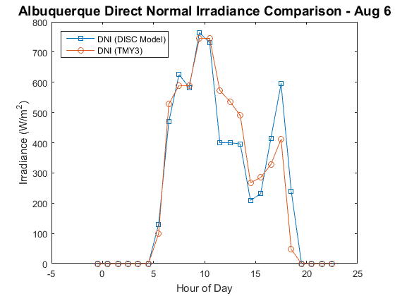

pvl_disc
Estimate DNI from GHI using the DISC model.
Contents
Syntax
DNI = pvl_disc(GHI,Z, doy) DNI = pvl_disc(GHI,Z, doy, pressure)
Description
The DISC model estimates direct normal irradiance (DNI) from global horizontal irradiance (GHI) using empirical relationships between the global and direct clearness indices.
Inputs
- GHI - a scalar or vector of global horizontal irradiance in W/m^2. If GHI is a vector it must be of the same size as all other vector inputs. GHI must be >=0.
- Z - a scalar or vector of true (not refraction-corrected) zenith angles in decimal degrees. If Z is a vector it must be of the same size as all other vector inputs. Z must be >=0 and <=180.
- doy - a scalar or vector of values providing the day of the year. If doy is a vector it must be of the same size as all other vector inputs. doy must be >= 1 and < 367.
- pressure - a scalar or vector of values providing the site pressure in Pascals. If pressure is a vector it must be of the same size as all other vector inputs. pressure must be >=0. If pressure is omitted, standard pressure (101325 Pa) will be used, which is generally acceptable if the site is near sea level. If the site is not near sea-level, inclusion of a measured or altitude-adjusted pressure is recommended. See pvl_alt2pres.
Outputs
- DNI - the modeled direct normal irradiance in W/m^2 provided by the Direct Insolation Simulation Code (DISC) model.
- Kt - Ratio of global to extraterrestrial irradiance on a horizontal plane.
Example
This example shows the measured and model-estimated direct normal irradiance for August 6 (TMY3 file for Albuquerque, NM). Note that the model-estimated quantity is not a match. This is a very difficult quantity to estimate and there are large uncertainties associated with using model estimates for DNI.
TMYData = pvl_readtmy3('723650TY.csv'); TimeMatlab = TMYData.DateNumber; Time = pvl_maketimestruct(TimeMatlab, ones(size(TimeMatlab))*TMYData.SiteTimeZone); dayofyear = pvl_date2doy(Time.year, Time.month, Time.day); DNI = TMYData.DNI; % Read in for comparison with results DHI = TMYData.DHI; % Read in for comparison with results GHI = TMYData.GHI; Location = pvl_makelocationstruct(TMYData.SiteLatitude,TMYData.SiteLongitude,... TMYData.SiteElevation); %Altitude is optional PresPa = TMYData.Pressure*100; %Convert pressure from mbar to Pa % % Models that rely on sun position that are run at specific time steps % (e.g., hourly) run into numerical problems during timesteps when the sun % straddles the horizon (i.e., spends part of the timestep above and part % below the horizon). Since in this example we use TMY day, which is % hourly and reported at the end of the hour, we adjust the sun position in % the following two ways. (1) For hours when the sun is above the horizon % we adjust sun position so it is for the middle of the hour. For example, % sun position reported at 4PM is the sun position at 3:30 PM. (2) For % hours where the sun straddles the horizon, we report the position half % way between the horizon and the position of the sun at the end of the % hour. This is appropriate because the GHI data is essentially a sum of the GHI % measurements made in the past hour. % % Run sun position twice: Once for end of hour positions. % A second time for mid hour positions. % Adjust sun elevation and GHI for hours when the sun traverses the horizon % Include these adjusted values in the mid hour positions % [~, ~, AppSunEl, ~] = pvl_ephemeris(Time,Location,PresPa,TMYData.DryBulb); Time.hour = Time.hour-.5; % shift times back 1/2 hour for sun position calculation because of tmy % timestamps [~, ~, AppSunEla, ~] = pvl_ephemeris(Time,Location,PresPa,TMYData.DryBulb); A=diff(sign(AppSunEl)); %identifies hour before sun straddles horizon (2,-2) ind1 = find(A==2)+1; % AM hour where sun straddles horizon ind2 = find(A==-2)+1; % PM hour where sun straddles horizon %AM Adjustment AppSunEl(ind1) = AppSunEl(ind1)/2; %change sun elevation to mid way above the horizon %PM Adjustment AppSunEl(ind2) = AppSunEl(ind2)/2; %change sun elevation to mid way above the horizon AppSunEla(ind1)= AppSunEl(ind1); AppSunEla(ind2)= AppSunEl(ind2); DNI_model = pvl_disc(GHI,90-AppSunEla, dayofyear, PresPa); figure tfilter = and(Time.month == 8,Time.day == 6); plot(Time.hour(tfilter),DNI_model(tfilter),'-s') hold all plot(Time.hour(tfilter),DNI(tfilter),'-o') legend('DNI (DISC Model)','DNI (TMY3)','Location','NW') xlabel('Hour of Day') ylabel('Irradiance (W/m^2)') title('Albuquerque Direct Normal Irradiance Comparison - Aug 6','FontSize',14)
References
[1] Maxwell, E. L., "A Quasi-Physical Model for Converting Hourly Global Horizontal to Direct Normal Insolation", Technical Report No. SERI/TR-215-3087, Golden, CO: Solar Energy Research Institute, 1987.
See also
pvl_dirint , pvl_erbs , pvl_louche , pvl_orgill_hollands , pvl_reindl_1 , pvl_reindl_2 , pvl_ephemeris , pvl_date2doy , pvl_alt2pres
Copyright 2014 Sandia National Laboratories